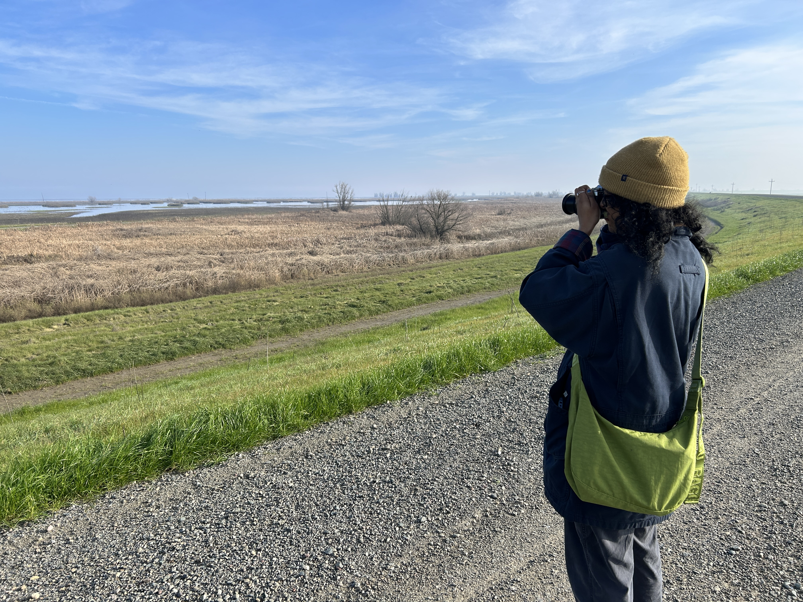
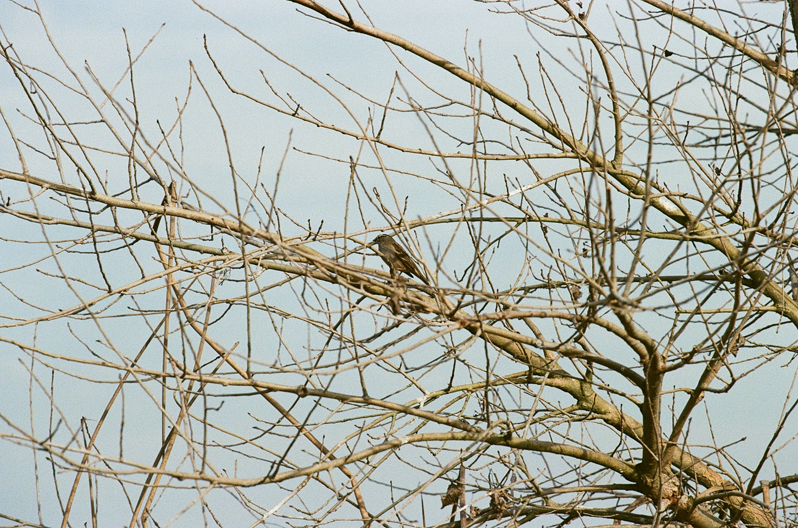
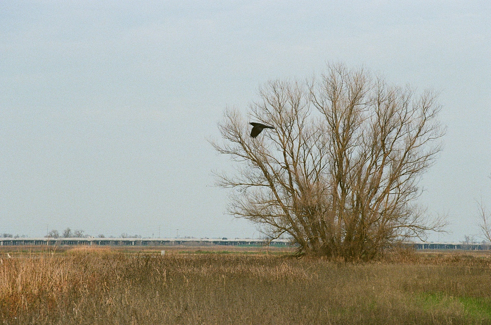

Today is my first day visiting the basin! I've passed by it many times on my way to Sacramento but this is the first time I'm visiting the basin with the intention of observing. I'm not a bird expert, so I went in with the mindset of learning to see birds here rather than trying to identify specific species. I wanted to get a sense of how birds use the space and what it feels like to be there as an observer.

I chose an unusal day to explore the basin. We had some heavy rains earlier in the month, leaving the ground mushy and flooding to overflow. The main parking lot to the basin was closed when I arrived. We saw some other cars parked along top of the levee road and decided to park along with them. Using only the resources from the bypass websites (both by then foundation and the government), the space felt open but not clearly structured for visitors. Trails were not marked clearly from the levee road. We had to rely more on intuition for navigation over the signage.
note to self
Bring binoculars and a telescoping lens for the Canon. Distance makes observation difficult
without tools.
Earlier in the week I had bought some used birding books from Logos Books in downtown Davis. Paired with my handy dandy birding observation book I bought from Newsbeat in Davis, I was ready to begin my first explorations into bird watching. Most of the visit was spent adjusting to the new landscape, learning where to look, how long to stay still, and how
quickly birds move in and out of view.
birdsvisibilityaccessfirst visit
02
Feb 7, 2026 · 2:13–2:50 PMmild · active insects
trail
tule trail and distance from the freeway
I did a little more research this time than the last, I looked up some trails on AllTrails and found the Tule Trail. I was just hoping that this time, unlike the last, the main entrance to the bypass would be open. We drive past the first two main parking lots and I realize this place is so much bigger than I had expected.
Most of my expeirence with the basin up until now has been either while driving through the freeway or being in proximity. This time we were a lot further and the sound of the freeway was all but gone. The presence of insects was constant, creating a different kind of movement in the space compared to birds.


Shot on Canon Elan 35mm · Fujifilm 200
"The further into the trail, the less the freeway existed."
Birds were often seen in direct relation to agricultural land, either resting in flooded fields or moving between sections. The overlap between habitat and farming became more visible here than during the first visit.
tule trailsoundinsectsagriculture
03
Mar 7, 2026 · afternoonmild · overcast
video recording
returning with a camera and a purpose
This visit was different. I came back to the basin with my thesis chair Glenda Drew specifically to document the space on video. Having someone else there changed how I moved through it, espcially since Glenda knew the space pretty well before I started visiting. We were able to go further down the Levee Road than I had on previous visits, which meant we were able to see parts of the basin I hadn't been to before. We also spent more time just sitting and filming, rather than walking around and trying to see as much as possible which I enjoyed a lot!
The basin was a lot calmer than earlier visits. I was trying to get a sense of what movement looks like here, not just birds, but the way wind moves through the tules, the way the water surface catches light, the general stillness that gets interrupted.
Yolo Basin · Mar 7, 2026
note to self
Video captures things that photos don't, sounds of the highway, motion of bird wings, all due to extended duration. Its fun to see the shifts in the space from nothing happening the suddenly a flock of birds in the air.
videomovementdocumentationfieldwork
04
Apr 29, 2026 · morningwarm · clear
site mapping
back on the tule trail, this time with a map in mind
I came back to the Tule Trail with a more specific goal — starting to gather material for the site mapping part of the project. I was paying attention to landmarks, access points, the relationship between the trail and the surrounding farmland.
The season had shifted noticeably since earlier visits. Things were drier, the water lower. The bird presence was different too — fewer waterfowl, more movement in the brush. The space felt less dense, more open.
I spent more time this visit just walking slowly and taking in how the trail relates to the wider basin. The levee road gives you a very different vantage than being down in the wetlands.
tule trailsite mappingaccessspring
05
May 13, 2026 · afternoonwarm · sunny
museum visit
meeting the birds up close at the wildlife museum
This visit wasn't to the basin itself but to the UC Davis Museum of Wildlife and Fish Biology — to see specimens of the birds I'd been observing in the field. There's something strange and useful about seeing a bird you've only watched from a distance suddenly right in front of you, still, under glass.
Being able to study them this closely helped me understand details I'd been missing — the scale of certain species, the differences in plumage, the physical reasons some birds move the way they do. It filled in gaps that field observation from the levee road couldn't.
note to self
The museum collection is a resource I should have visited earlier. Highly recommend to anyone doing bird observation work in the region.
Thanks to Irene Engilis for access to the collection and Kevin Wu for helping identify and pull the right specimens.
birdsmuseumspecimensresearch
06
May 18, 2026 · morningwarm · clear
auto tour
the yolo bypass auto tour
The auto tour route through the Yolo Bypass Wildlife Area gives you access to parts of the basin that aren't reachable on foot. You drive slowly through the levee roads and the landscape opens up around you in a way that's completely different from hiking in. It's more passive, but you cover more ground and see more variation in habitat.
This was one of the last visits of the project and it felt like a kind of summary — a way to see the whole thing at once before wrapping up. The water levels were low by May but there were still birds, still activity in the fields. The basin doesn't really stop.
note to self
The auto tour is worth doing early in a project like this, not at the end. The scale of the bypass is hard to grasp until you've driven it.
auto tourbypasslandscapemay
07
May 18, 2026 · afternoonwarm · clear
wetlands
the davis wetlands
After the auto tour I went to the Davis Wetlands, which sit just outside the city and feel like a more contained, managed version of what's happening in the wider bypass. The water treatment ponds attract a lot of the same species you'd see in the basin but in a much smaller, more accessible space.
It was interesting to visit both in the same day. The contrast made the scale of the bypass feel even more significant. The Davis Wetlands are easy to walk and well-marked — the kind of access the bypass mostly doesn't offer. Both serve the birds. They just feel very different to be in.